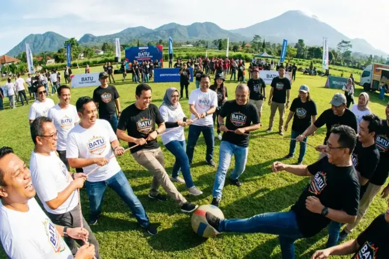

Outbound 1 hari di Batu membutuhkan rundown yang tersusun ketat agar setiap sesi berjalan sesuai waktu tanpa membuat peserta kelelahan di penghujung acara. Kota Batu dikenal dengan kawasan alamnya yang sejuk sehingga sangat cocok dijadikan lokasi wisata korporat, dan banyak vendor outbound terpercaya berpusat di kawasan Batu dan Malang.
Ringkasan Inti
- Rundown yang jelas mencegah keterlambatan dan memastikan seluruh sesi berjalan optimal.
- Durasi tiap aktivitas, termasuk ice breaking, sebaiknya dicantumkan secara spesifik.
- Contoh rundown lengkap mencakup rentang waktu 08.00 hingga 17.00.
- Ishoma dan waktu istirahat wajib dialokasikan secara proporsional.
- Sesi evaluasi di akhir acara membantu menutup kegiatan dengan refleksi yang bermakna.
1. Kenapa Batu Jadi Lokasi Favorit untuk Outbound Korporat?
Batu menjadi lokasi favorit untuk outbound korporat karena kawasannya memiliki udara sejuk, pemandangan alam yang mendukung suasana rileks, serta akses ke berbagai vendor dan fasilitator outbound yang berpengalaman.
Kondisi geografis ini membuat peserta lebih cepat merasa nyaman sejak awal acara, sehingga sesi ice breaking maupun permainan kelompok berjalan lebih lancar.
2. Apa Prinsip Menyusun Rundown Outbound yang Efektif?
Prinsip menyusun rundown outbound yang efektif dimulai dari penentuan tujuan acara, pengenalan kondisi fisik peserta, hingga memastikan waktu makan dan istirahat tercukupi secara proporsional.
Durasi ice breaking sebaiknya dicantumkan secara eksplisit dalam rundown, misalnya 15-25 menit, agar sesi ini tidak molor dan mengganggu jadwal aktivitas berikutnya.
3. Apa Saja Hal yang Sering Diabaikan Saat Menyusun Rundown?
Hal yang sering diabaikan saat menyusun rundown adalah jeda transisi antaraktivitas, waktu untuk persiapan alat, dan buffer time untuk mengantisipasi keterlambatan kecil di lapangan.
Tanpa jeda ini, rundown yang terlihat rapi di atas kertas sering kali molor drastis begitu dijalankan langsung di lokasi.
4. Bagaimana Contoh Rundown Outbound Satu Hari Penuh di Batu?
Contoh rundown outbound satu hari penuh di Batu umumnya berlangsung dari pukul 08.00 hingga 17.00, terbagi dalam sesi registrasi, ice breaking, aktivitas kelompok, istirahat, dan penutupan.
| Waktu | Kegiatan |
|---|---|
| 08.00 - 08.30 | Registrasi dan pembukaan |
| 08.30 - 09.00 | Ice breaking (contoh: Rantai Nama atau Peta Kursi) |
| 09.00 - 10.00 | Aktivitas kelompok I (Spider Web untuk sinergi tim) |
| 10.00 - 10.30 | Istirahat dan snack (waktu mingle) |
| 10.30 - 12.00 | Aktivitas kelompok II (tantangan semi-fisik ringan) |
| 12.00 - 13.00 | Ishoma (istirahat, sholat, makan) |
| 13.00 - 14.30 | Aktivitas kreatif (kerajinan tangan atau nature art) |
| 14.30 - 15.30 | Aktivitas kelompok III (permainan puncak / estafet tim) |
| 15.30 - 17.00 | Istirahat, sesi refleksi, dan penutupan |
Baca Juga
5. Kenapa Sesi Ishoma Perlu Dialokasikan Secara Proporsional?
Sesi ishoma perlu dialokasikan secara proporsional karena peserta membutuhkan waktu istirahat yang cukup untuk memulihkan energi sebelum melanjutkan aktivitas kelompok di sesi siang.
Mengalokasikan satu jam penuh untuk ishoma, seperti pada contoh rundown di atas, membantu memastikan peserta kembali dalam kondisi fokus saat sesi kreatif dimulai.
6. Apa yang Sebaiknya Dilakukan pada Sesi Penutupan?
Sesi penutupan sebaiknya diisi dengan refleksi singkat mengenai pelajaran yang didapat sepanjang hari, bukan sekadar seremoni formal tanpa makna.
Fasilitator bisa mengajak peserta berbagi satu momen paling berkesan dari rangkaian aktivitas, sehingga acara ditutup dengan kesan yang lebih personal dan bermakna. Persiapan jadwal yang terperinci menghindarkan HRD dari kebingungan di hari-H, menjadikan agenda satu hari di Batu padat namun tetap berkesan bagi seluruh peserta. Untuk ide aktivitas yang bisa mengisi rundown tersebut, termasuk permainan yang melatih komunikasi tim, lihat panduan lengkapnya pada artikel outbound karyawan.